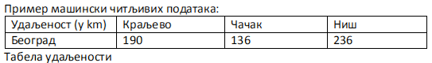

Отворени подаци¶
- На овом часу ћемо говорити о:
подацима и информацијама;
базама података и информационим системима;
појму „отворени подаци”;
концепту „отворености” података;
порталима отворених података;
томе шта јесу а шта нису отворени подаци;
сакупљању и обради података,
професијама у вези са подацима;
вези између отварања података и стварања услова за развој иновација и привредних грана за које су доступни отворени подаци.
Подаци¶
У претходним лекцијама о раду у програмима за табеларне прорачуне, било је речи о појмовима податак и информација.
- Потсети се ових појмова, па размисли и одговори на следећа питања:
Какви су нам све подаци и информaције на располагању?
Који су све изазови у вези информација у савременом дигиталном добу?
Колики је број резултата које добијаш када претражујеш неки појам на интернету?
Да ли има превише информација?
Да ли је до свих информација лако доћи?
Да ли су неке мање или више транспарентне у односу на остале?
Да ли су све информације до које дођемо тачне?
Шта су то лажне вести (fake news)?
Колико и да ли људи данас верују свакој информацији?
Потсети се начинима на које критички вреднујемо информације провером веродостојности и извора информације.
{kind=link}
Сет података или скуп података је скуп чињеница које су добијене систематским мерењем, посматрањем или на неки други начин. На пример Сет података могу представљати све просечне температуре мерене сваког дана на некој метеоролошкој станици у току године. Да би оне могле да се употребе у различите сврхе, податку о свакој измереној температури треба да буду придуржени подаци о времену и датуму мерења. У случају губитка ових других података, сет података о просечним температурама нема употребну вредност. Сет података могу представљати нпр. слике које сними вештачки сателит кружећи изнад Земље. Анализа ових слика нема смисла ако се не сачувају подаци о тачним географским локацијама, времену када је снимано и др. Ови сетови података се могу нпр. анализирати по врсти и кретању облака и користити при временској прогнози.
„Big Data“ је појам који настаје са наглим напретком у развоју рачунарске технологије када се стекла могућност да се циљано или успутно прикупљају изузетно велики сетови података (енг „big data“). Обрада ових огромних сетова података представља већи изазов него њихово скупљање јер тражи велике рачунарске ресурсе. Зато је обрада великих сетова података нови изазов за науку која се бави обрадом података.
- Примери:
Државе скупљају велике сетове података о грађанима (идентитет, образовање, пребивалиште, порези и др.);
Фирме скупљaју податке о производњи и продаји својих производа, приходима, запосленима и слично;
Модерне ИКТ технологије генеришу велике сетове података: на Гугл претраживачу се обави око 40.000 претрага сваке секунде, што генерише податке о претраживању од 1.2 трилиона годишње (колачићи код корисника и слично);
Сетови података који се генеришу нпр. за заузета и слободна места у јавној гаражи за све гараже у великом граду, када се за сваки минут времена чува податак о заузетости је пример за велики сет података.
Модерна наука је базирана на провери претпоставки што се најчешће изводи експериментима у току којих се скупљају велики сетови података, па се нпр. при анализи ДНК скупљају сетови података који спадају у велике податке за велики број људских или животињских ДНК.
Подаци се физички складиште на серверима који представљају рачунаре који имају велике дискове за чување података и боље процесоре за извршавање програма учитавања или ишчитавања података. Сервер је физички медијум за чување података који су на њима смештени у форми база података. Базе података су организоване колекције података на начин који омогућава њихово прецизно и брзо уписивање, ишчитавање и ажурирање. Појединац може своје податке да организује на различите начине на свом рачунару, на пример, своје фотографије и филмове као фајлове да чува у одређеним фолдерима који се физички чувају на хард-диску рачунара. Међутим, разне организације и компаније, као што су банке, државне институције, авио-компаније, ланци продавница итд. раде се далеко већим количинама података па су им неопходне базе података. Сервери на које се те базе физички складиште налазе се у посебним просторијама (рачунским центрима) компанија које их користе. Да би се избегао губитак података, базе се праве тако што се дуплирају копије и смештају на различитим локацијама. За мање системе праве се копије на различитим хард дисковима тако да ако дође до отказивања једног хард диска остаје друга копија података. За веће системе рачунарски ресурси за чување података су „у облаку“, тј. на удаљеној локацији код провајдера рачунарских ресурса доступног на интернету. За јако велике базе података, тј. за простор у облаку где се чувају подаци многих компанија и појединаца, потребна су и велики рачунарски ресурси, који се простиру на великој површини и троше много електричне енергије. Зато се велики центри за чувања података (енг. „data center“) све више граде тако да се обезбеђују еколошки извори енергије за њихово напајање и хлађење. На пример, највећи светски провајдери за рачунарство у облаку су „Amazon“, „Google“, „Microsoft“, „IBM“, „Alibaba“. Услуге чувања података у облаку могу да користе и појединци за које је та услуга најчешће бесплатна и подразумева чување мањих количина података у односу на количине података које су потребне компанијама. На пример, сваки корисник Gmail адресе има и свој диск у облаку на којем може да чува своје податке (тзв. „GDrive“).

Скупљање и обрада података Цео систем за скупљање и обраду података се прави да би се из скупљених података извукле корисне информације и употребљиви закључци. Подаци су „нафта 21. века“, имају своју велику вредност, јер се у 21. веку сматра да је одлучивање на бази података најбољи поступак за доношење пословних или државних одлука. Раније су се ове одлуке доносиле на основу мишљења особа формираних искуством у одређеној области. Обрадом података и њиховом анализом се долази до закључака који имају смисла за онога који је наручио обраду. Обрада података и анализа су процеси у којем се прво спроводи “чишћење” података од грешака насталих при скупљању и одвајања важних од неважних података, а затим њихова математичка анализа. Ове обраде могу бити једноставне али и врло сложене па се све више говори о анализи сложених и богатих сетова података подигнутој на ниво „науке података“ (енг. „data science“). Ако се направе грешке при скупљању или анализи података, овај скуп процес није само обесмишљен него се доносе закључци и пословне одлуке које су погрешне, што може донети велике пословне губитке или одлуке које могу имати тешке последице по онога ко одлучује. Анализа и обрада података се може радити на више начина у зависности како су подаци организовани: у програмима за рад са табеларним подацима, језиком SQL у релационим базама података, а појавом изузетно великих сетова података (енг. „Big Data“) се уводе и нови специјализовани програми од којих је најпознатији програм „R“.
Примери: Обрадом велике количине података који су прикупљени на основу продаје производа у продавницама, могу да се добију разне информације, на пример који је производ највише пута купљен у последњих 6 месеци, а који се најлошије продавао. Управници продавнице могу да донесу одлуке на основу ових информација, могу најпродаванији производ да ставе у рекламу зато што знају да он привлачи купце, а могу најслабиде продавани производ да ставе на акцију да би повећали његову продају. Прикупљене дневне температуре на сваких сат времена, могу да буду обрађене у сет података о средњој дневној температури која ће послужити за одговор на питање да ли постоји глобално отопљавање,ако се довољно дуго скупљају.
Пример: У једној школи се израчунају просечне оцене по предметима за све разреде. Те просечне оцене су очекивано сличне. Међутим, уколико код неког предмета долази до посебног одступања, то може да буде сигнал за школу да испита о чему се ради. Након обрађених података и добијања иформација за сваку школу о просечном броју изостанака ученика током школске године (укупан број изостанака свих ученика подељен са бројем ученика), уколико се види да нека школа има превелики број, може да се посвети пажња тој школи и да се установи узрок великог изостајања ученика.

Отворени подаци¶
Отворени подаци (енг. open data) су јавно доступни подаци (објављени јавно на интернету) који могу бити слободно доступни свима и којима може свако да приступи, да их обрађује и да их користи без надокнаде на било који начин, за било које сврхе, без ауторских ограничења и механизама контроле, чак и да их даље објављује. Довољно је само да се наведе извор. Под појмом отворених података најчешће се мисли на табеларне и текстуалне податке које стварају јавне институције, али се појам подједнако користи и за информације које се односе на мапе, хемијска једињења, математичке и научне формуле, медицинске податке и друго. Са обзиром на то да су по својој природи ово подаци веома разноврсни и да се могу обрађивати и примењивати на различите начине, тешко их је класификовати, али их је могуће груписати према областима на које се односе.
- Могу се разврстати на:
Гео-подаци: помажу у стварању мапа које узимају у обзир околне грађевине и путеве, топографије и границе.
Подаци о култури: омогућавају преглед културних добара и баштине једне земље и најчешће су у поседу галерија, библиотека, музеја и архива.
Научни подаци: настали су током истраживања у свим областима науке.
Финансијски подаци: трошкови и приходи владе, подаци са берзе о акцијама и деоницама.
Статистички подаци: произведени су у статистичким центрима, током пописа становништва према различитим социо-економским индикаторима и слично.
Метеоролошки подаци: доступни су уз помоћ сателита и других извора за праћење климатских услова и прогнозирање временских прилика.
Подаци о животној средини: тичу се природних добара попут река, мора или планина, заштићених зона природе, као и њиховог загађења.
Подаци јавне управе: подаци о раду органа државне управе.
- Шта нису отворени подаци?
лични подаци, информације које се односе на конкретне особе,
подаци чија је употреба под оправданим рестрикцијама заштите ауторских права, из безбедносних или комерцијалних разлога, и слично.
Отворени подаци имају различите карактеристике а најважније су да су слободно доступни свима, приступачни, а да би у време рачунарских технологија били искористиви важно је да буду машински читљиви у отвореним дигиталним форматима и да се њиховом даљом употребом, у комерцијалне или некомерцијалне сврхе, може створити додатна друштвена вредност или економска корист. Подаци који су примарно прикупљени за неку сврху могу се искористити и у неке друге сврхе. Отворени подаци су јавно објављени подаци који су скупљени у неке сврхе и за исте коришћени од стране организације или особе која их је прикупила. Када се јавно објављују тада неко ко је заинтересован може да их обради у сврхе за које нису прикупљени и тиме повећа корист од њиховог прикупљања. На пример: Базе података Републичког завода за статистику (које је могуће преузети у ексел фајловима) дају многе податке о привреди и друштву у Србији, уз доступне визуелизације већину сетова података. Један сет података који се може прузети са ових база су подаци о томе колико грађани Србије учествују у интернет трговини.
Потреба за отвореним подацима Због велике предности и вредности које доноси, иницијативе за отворене податке се покрећу у све већем броју земаља. Употребна вредност и потенцијалне примене отворених података повећавају се даљим развојем технологија које омогућавају озбиљнију анализу података и њихово лакше коришћење.
- Концепт ‘отворености’ је посебно важан из више разлога:
доноси увећање могућности за сарадњу различитих система и организација, комбиновање различитих скупова података, а тиме и могућности за развој више производа и бољих услуга,
отворени подаци јачају транспарентност рада државних органа, подстичу ефикасност у влади и ван ње,
омогућава грађанима, предузећима и организацијама да користе јавне податке више пута у различите сврхе,
јача се предузетништво јер се утиче на развој иновативних производа и услуга, обезбеђују се алати за алтернативно доношење одлука у области менаџмента, планирања и науке, и доприноси успостављању привреде засноване на знању,
ствара се додатна вредност за органе власти, укључујући боље јавне сервисе, смањује оптерећење државне управе и поспешује сарадња са грађанима, предузећима и организацијама,
омогућује препознавање неједнакости у друштву јер се отворени подаци могу користити као алат за праћење успешности политика које треба да реше те неједнакости,
доносиоци одлука могу да креирају боље јавне политике које се тичу родне равноправности и да пажљивије прате њихове ефекте,
отварање података је логичан процес јер су подаци које јавне институције сакупљају управо подаци грађана који свакодневно учествују у њиховом стварању.
„Отварање података“ је јавно објављивање података у машински читљивом облику (који омогућава електронску обраду). Врши се да би се обезбедило њихово вишеструко коришћење. Државе отварају податке и из још једног важног разлога: да обезбеде „транспарентност јавне управе“ тј. да обезбеде да се грађани информишу о функционисању државе на систематски начин. Процењено је да се отварањем података може остварити и економска добит јер се доступношћу отворених података стварају додатни услови за развој иновација и привредних грана за које су доступни отворени подаци.
Република Србија има велики напредак у отварању податак јер је њен индекс отворених података на првом месту у региону и 41. на листи свих чланица Уједињених нација. Јавно објављени подаци се најчешће дају на коришћење без икакве накнаде, али онај ко их користи може наплаћивати нпр. инсталацију веб или телефонске апликације која користи отворене податке или резултате истраживања на основу података за неког приватног клијента. Ипак, већина примена је отворена и много их је бесплатних за крајњег корисника. У отварању података се мора пазити да не дође до објаве тајних или личних података као што су нпр. војне тајне или лични подаци, јер се тиме могу угрозити сигурност државе или неких особа.
Пример: Отварање података у Србији – државни портал отворених података: https://data.gov.rs/sr/discover/
Портали отворених података¶
Државе и државне институције широм света су велики прикупљивачи података који могу бити вишекратно искоришћени. Државе су зарад добробити својих грађана заинтересоване да се подаци које су прикупиле што више искористе, за разлику од неких фирми које своје податке чувају да би себи обезбедиле предност на тржишту (иако има и фирми које налазе интерес у отварању података). Зато су највећи портали на којима се објављују отворени подаци државни портали, портали међународних организација и портали великих државних институција. Национални Портал отворених података (data.gov.rs) представља место на коме се објављују информације о скуповима отворених података државних органа Републике Србије, али и свих осталих субјеката са подацима који задовољавају услове да буду отворени. То обухвата органе државне управе, аутономних покрајина и локалних самоуправа, као и организације којима је поверено вршење јавних овлашћења – влада, министарства, општине, агенције, регулаторна тела, установе, комунална предузећа и други. Успостављање оваквих портала је стандардна пракса широм света.
- Примери државних портала отворених података:
Портал отворених података Сједињене Америчке Државе (енг) - https://www.data.gov/
Портал отворених података Европске уније (вишејезичан)- https://data.europa.eu/
Портал отворених података Уједињеног Краљевства - (енг) https://data.gov.uk -
Портал отворених података Индије (енг) - https://data.gov.in/
Портал отворених података Града Њујорка - (енг) https://opendata.cityofnewyork.us
Портал отворених података Уницефа - https://data.unicef.org
Портал отворених података Националне свемирске агенције САД НАСА (енг.) - https://go.nasa.gov/2NEk1e8
Примарна намена Портала јесте да буде репозиторијум отворених података, али је он и простор интеракције са заједницом која те податке користи. Поред претраге објављених скупова података, корисници Портала могу да прате активности организација које објављују податке, као и да дискутују о објављеним подацима. Садржаји су доступни програмерима путем апликативног програмског интерфејса (АПИ). Такође, корисници овде могу да представе свој рад на примени података – било да се ради о мобилним или веб апликацијама које употребљавају отворене податке, различитим визуализацијама, мапама и другим облицима поновне употребе. Канцеларија за ИТ и еУправу одржава национални Портал отворених података и представља први контакт за све организације које желе да објављују податке. Уобичајено је да портали ове намене буду једноставни за навигацију.
- Портал отворених података за државне органе у Србији има неколико целина:
Отворени подаци - Основне информације о отвореним подацима и Порталу, као и одговори на питања о процесима отварања података на националном и међународном нивоу.
Теме - Категоризација скупова и ресурса на основу најактуелнијих тема: јавна безбедност, образовање, енергетика, управа, здравље, животна средина, итд.
Организације - Регистровани чланови Портала који отварају податке или објављују примере употребе отворених података. За регистрацију је задужена Канцеларија за ИТ и е-Управу.
Скупови података - Репозиторијум отворених података. Скупове података објављују администратори организација који дефинишу и начин на који ће подаци бити структурисани. Сваки скуп података садржи један или више ресурса, који представљају појединачне датотеке са подацима. Осим постављања података на Портал, постоји могућност да се на Порталу само објави линк ка скупу података који се налази на другој локацији. Постављање фајлова је могуће ручно или аутоматски путем АПИ-ја. Уз податке је потребно објавити и метаподатке, податке о подацима, као што су: опис, формат, датум креирања, фреквенција ажурирања, лиценца, простор на који се подаци односе.
Примери употребе - Важна функција Портала је промоција и подстицање употребе отворених података. Да би корисник додао пример употребе, потребно је да уз скуп података за који жели да дода случај употребе, изабере опцију у дну екрана Случајеви коришћења -> Додај случај употребе. Тиме се покреће прегледна и јасна процедура за опис случаја употребе.
Блог - Вести које се тичу Портала, нове иницијативе у домаћим оквирима и глобални трендови отварања података.
Пријава/регистрација - Секција Портала која садржи формуларе за пријаву раније регистрованих корисника и организација, као и регистрацију нових корисника.
Формати отворених података¶
Формати отворених података су исти као и формати података, али је важно је да се омогући да ове податке користе и апликације и да их за обраду може искористити што више људи, без ограничења набавке скупих програма који имају ексклузивне лиценце за неке формате. Подсетимо се: назив сваке датотеке је тачком раздвојен од скраћенице за назив формата у којем су подаци датотеке. Датотека “ja.doc“ има назив „ја“ и формат „doc“ који лаику само указује на то у којем програму може да се „отвори“ или направи датотека, али стручњаку казује да је то датотека која је направљена по строго прописаним стандардима који за овај тип датотеке и стручњак на основу познавања ових стандарда може чак да направи програм за читање ове датотеке.
- Формати датотека:
за чување нумеричких и текстуалних података најчешће заступљени на порталима отворених података су формат компаније Microsoft „Xlsx“ и отворени „ods“ – оба су базирана на XML стандарду и оба се могу читати и обрађивати алатима MS Excel или Apache OpenOffice Calc (и многим другим).
за чување података о географској локацији користи се XML варијанта „КML“ која је оригинално направљена за „Google Earth“.
за чување сликовних података користе се формати слика.
Све чешће се на отвореним порталима могу наћи и нумерички и текстуални подаци у „JSON” формату који је такође отворени формат који је и машински и људски читљив, који се често користи за пренос података од клијента до сервера у веб апликацијама. За гео податке постоји „geoJSON”.

Задатак: На Порталу отворених података Ирске на страни https://data.gov.ie/dataset са леве стране се може видети у којим су све форматима подаци. Наведи бар 5 формата на које си наишао када си проучавао овај портал отворених података. (Заступљени су формати JSON, PX (формат за слике тј. податке који се састоје од слика), CSV, TXT (обични текстуални формат), KML и други.)
Машински читљиви подаци Подаци могу бити тако форматирани да могу бити само људима читљиви и разумљиви или да буду машински читљиви и разумљиви. За рачунарску обраду података неопходно је да буду машински читљиви тј. да буду јасно дефинисани и добро форматирани да би могао да их чита и обрађује рачунар. Машински читљиви подаци су део неких већих сетова података смештених у базе података. Неки машински читљиви подаци се одмах, на извору, генеришу као такви – нпр. када се аутоматски очитава температура ваздуха на неком дигиталном мерном уређају и шаље посредством интернета податак о измереној вредности да се упише у базу података која је удаљена и километрима од места мерења. Други машински подаци морају да се претворе у машинске, јер на извору нису били у таквом облику или добро форматирани.
Пример податка који није машински читљив: „Удаљеност Београда до Краљева је 190km, Чачак је удаљен 136km од Београда, а Ниш 236km.“ Ове податке човек лако чита и разуме, али смештени у реченицу су нечитљиви за рачунар (иако се може очекивати да се са напретком рачунарских технологија превазиђе ово ограничење).
{kind=link}
На основу података у табели удаљености је лако написати програм који ће увести податке из табеле и обрадити их како желимо нпр. наћи који је од наведених градова најближи Београду, док за сет података исказаних реченицом не можемо рећи да су „машински читљиви“ и самим тим их није могуће искористити да се обрађују рачунарем, осим ако се не припреме тј.ако се од реченице ови подаци претворе у већ приказану табелу.
Квалитет и значај отворених података
Шта су квалитетни и корисни отворени подаци? Да би отворени подаци били корисни онима који желе да их употребе у различите сврхе, сетови података морају да задовољавају одређене квалитативне норме.
- Постоје два основна критеријума њихове отворености:
Сви подаци су правно отворени - налазе се у јавном домену и носе минималне рестрикције за употребу.
Технички су отворени - машински су читљиви, јавно су доступни путем интернета и записани су у форматима које читају софтвери у најширој употреби.
„Отворено“ је правни и технички концепт који се дефинише слободом приступа, употребе, измене и дељења за било које сврхе. Поред самих података, отворен може бити и садржај (текстови, слике, филмови, програмски код) као и формат у ком се подаци или садржај налазе. Такође, отворене могу бити и лиценце којим се регулише право на коришћење садржаја. Квалитетни и корисни отворени подаци такође подразумевају изворност (објављивање података у облику у коме су прикупљени, без накнадних промена), комплетност (уз податке су приложени опис њихове структуре, пратећи шифрарници и слично) и ажурност (која се постиже директним преузимањем података из базе у којој се изворно обрађују).
Визуaлизација отворених података и Инфографик¶
Визуализација података помаже човеку да разуме податке који су представљени сликом. Циљ визуализације података (било да су то отворени подаци или не) јесте да једноставно и ефектно преносе корисницима сложене информације. Са поступком и начином визуализације података, као и могућностима за графички приказ података упознаћеш се у оквиру следеће наставне теме.
- Примери
Видео Визуaлизација ваздушног саобраћаја у Европи (енг.) https://bit.ly/2IJ67Zh
Визуaлизација предвиђања броја година живота за становнике ЕУ држава (мапа, енг.) https://bit.ly/2EnRHbs
Визуализација пораста производње нуклеарне енергије у Индији од 2010.до 2016. године (график, енг.) https://bit.ly/2EkmuGa
Интерактивни алат о потрошњи јавног буџета по ставкама у земљама ЕУ (вишејезично) https://bit.ly/2wxti05

Инфографик је комбинација слике и текста који у форми „сликовнице“ преноси информацију гледаоцу, као причу која својим дизајном и текстом треба да га заинтересује. Инфографик може бити у форми постера, бенера за веб (једне JPG слике или анимиране GIF слике нпр.), видеа или неког другог облика за приказ покретних и непокретних слика са текстом. Инфографик је врло погодан за приказ обрађених сетова података људима који нису експерти за ту област, јер поједостављено, и на интересантан начин за дату циљну групу, приказује закључке и резултате обраде података . Инфографик се може направити у било ком алату за приказ слика са текстом нпр. у алату Adobe Photoshop при чему се може припремити постер добарог квалитета. За постере који не морају бити високог квалитета се могу користити Microsoft PowerPoint у који се увозе слике направљене у програмима за обраду података као што су „Tableau“ или „R“, Microsoft Excell или Apache Open Office. Постоје и специјализовани веб базирани алати који омогућавају и делимичну обраду података и дизајн.
- Примери
Инфографик о сиромаштву у Србији https://bit.ly/2GTZ1iF
Инфографик у виду мапе о минималним зарадама у Србији у поређењу са неким земљама у Европи https://bit.ly/2SxOwTO
Инфографик о коришћењу платних картица у Србији https://bit.ly/2XsubTD
Инфографик о статусу породичних фирми у Србији https://bit.ly/2TrqP3S
инфографик о навикама грађана Србије у исхрани и физичкој активности,
Професије у вези са подацима¶
Данас су врло тражене и плаћене професије везане за скупљање података, администрацију база података, анализу података и др. Неке од ових професија су постојале и пре двадесетак година али су доживеле експанзију, а неке тек сада настају и нове ће настајати. Постоји велика потреба за овим кадровима на светском нивоу, и недостатак квалификоване радне снаге, па су и плате за ове стручњаке високе. Oсобе које намеравају да раде или раде у овим професијама треба да имају позитиван став према целоживотном учењу и буду спремне на континурирани професионални развој јер знања у облaсти информациниoх технологија брзо застаревају. Додатно, дешава се да високошколске институције које образују овај кадар недовољно брзо осавремењују своје студијске програме па је ради боље интеграције на тржиште рада потребно стећи висок степен самосталности у учењу. Са обзиром да се трендови у развоју технологије прво појављују у земљама енглеског говорног подручја, неопходно је познавање овог језика како би се учило у онлајн окружењу. Нпр. светски познати универзитети нуде онлајн курсеве и сертификате за њих преко „Coursera“ или „EdX“ платформи за електронско учење. Неке ИКТ фирме нуде и предавања и индустријске сертификате из ове области („Oracle“, „Microsoft“, Мајкрософт и др.).
- Примери ових професија су:
Конструктор базе података је задужен/задужена да у сарадњи са стручним лицима за област података који се чувају у бази осмишљава које све податке треба да чува база и у ком облику (текст, цифра, аудио запис, слика и др.), и какве све везе треба да постоје између података.
Администратор базе података је задужен/задужена да редовно одржава базе (ажурира софтвер, даје или укида приступ бази за лица која раде у фирми и др.) и врши извлачење података.
Обрађивач података је задужен/задужена да на основу извода података из базе изврши анализу
Како су базе података део информациних система којима се и скупљају подаци, програмери и администратори сервера су особе потребне да би се одржавале базе података као део система.
{kind=link}
Задатак: Пронађите актуелне огласе за посао за професије у вези са подацима. Која је позиција? Која се знања траже? Ако се тражи познавање језика SQL, или језика R или другом софтверском алату чије се познавање тражи огласом за посао, пронађи нешто о томе на интернету.
Закључак Осигуравањем доступности отворених података за коришћење у комерцијалне или некомерцијалне сврхе, на пример путем развоја апликација, обраде и прераде података за научна и друга истраживања, повезивања различитих база података, ствара се знатна додатна друштвена и економска вредност, искоришћавају се постојећи потенцијали и јача транспарентност јавног сектора и смањује ризик од корупције. Отворени подаци омогућују стварање компетитивних предности, развој иновација и нових радних места и отворити могућност новог запошљавања 25.000 људи. Европски портал отворених података тврди да су отворени подаци предуслов за било какву употребу вештачке интелигенције у јавном сектору, било да је у питању коришћење вештачке интелигенције за предикцију догађаја, мониторинг различитих феномена, истраживања везана за јавне политике, и друго. Имајући ово у виду, очекује се да ће отварање података различитих институција ослободити потенцијал за коришћење технологија заснованих на вештачкој интелигенцији у оквиру јавних политика, на пример кроз предвиђање и спречавање саобраћајних несрећа, унапређење јавног превоза, интеракцију јавних услуга са особама са посебним потребама, итд.
Литература: “Приручник за наставу о отвореним подацима”, пројекат „Отворено образовање у Србији” Центар за образовне технологије Западни Балкан